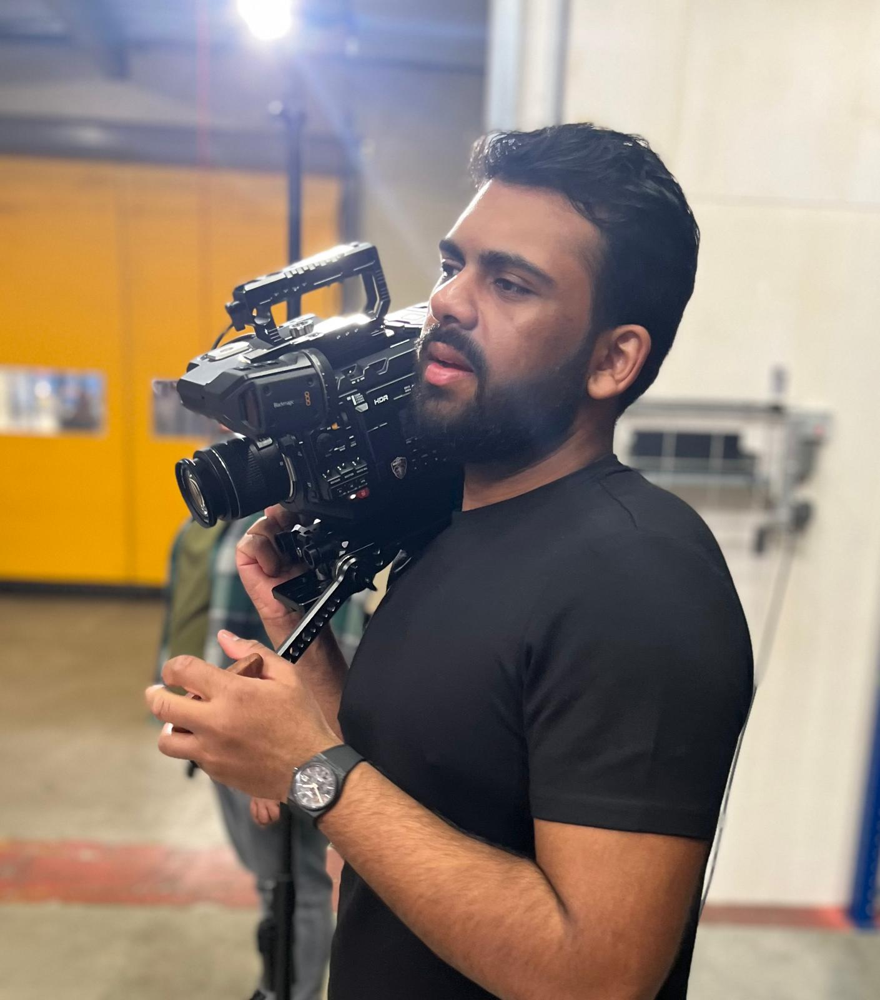
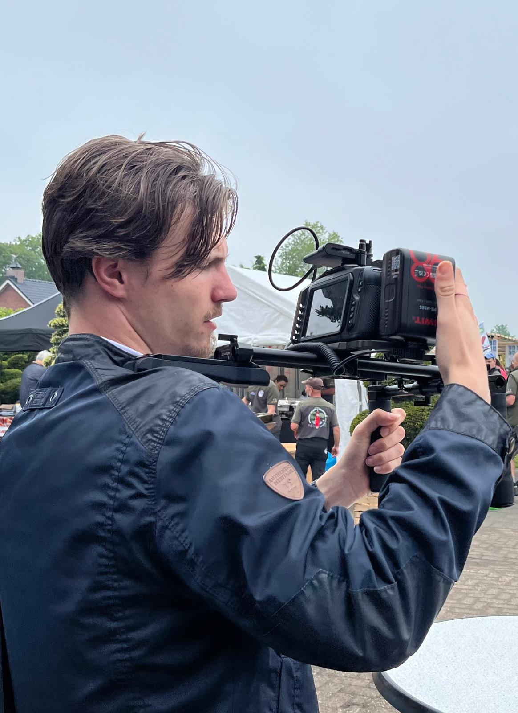
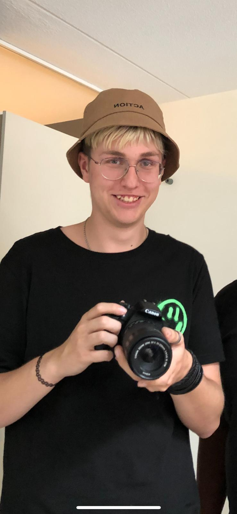

Borderline Light
Een minimalistische brandfilm met veel ruimte, stille spanning en subtiele reflecties.
Filmmaker portfolio
Jay is een gepassioneerde filmmaker die elk onderdeel van zijn vak wil beheersen. Van concept tot color grading: elk frame krijgt aandacht, ruimte en een duidelijke bedoeling.
Selected work
Een minimalistische brandfilm met veel ruimte, stille spanning en subtiele reflecties.
Observational beelden die menselijkheid centraal zetten en de omgeving rustig laten spreken.
Een muziekvideo voor Okya Band, met focus op camerawerk, strakke focus en technische ondersteuning op set.
Bekijk projectOver ons
Jay Ramharakh, Joram van Noort en Dylan Janssen combineren regie, camera, montage en afwerking in één duidelijke visie. Onze stijl is ingetogen, cinematisch en doelgericht, met aandacht voor licht, ritme en emotie.
De portfolio volgt dezelfde gedachte: veel negatieve ruimte, sterke typografie en een donkere basis met zilver en bordeaux als contrasterende accenten.

Regie & camera

Montage & afwerking

Productie & support
Proces
We vertalen het doel naar een helder visueel idee met een sterke basis.
Camera, licht en beweging worden bewust ingezet om sfeer en focus te sturen.
Montage, kleur en sound design brengen rust, diepte en een premium gevoel samen.
Contact
Van branded content en aftermovies tot muziekvideo’s. Iedere productie wordt benaderd met een filmische blik en oog voor detail.